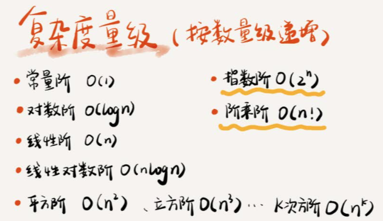

Table of Contents
#+TITLE 数据结构与算法之美
这里记录下学习王铮的数据结构与算法之美系列的笔记
1 复杂度分析
数据结构和算法是相辅相成的。数据结构是为算法服务的，算法要作用在特定的数据结构之上。
数据结构是静态的，它只是组织数据的一种方式
想要学习数据结构与算法，首先要掌握一个数据结构与算法中最重要的概念——复杂度分析。
1.1 大O复杂度表示法
表示代码执行时间随数据规模增长的变化趋势，所以，也叫作渐进时间复杂度(asymptotic time complexity)，简称时间复杂度
int cal(int n) { int sum = 0; int i = 1; int j = 1; for (; i <= n; ++i) { for (; j <= n; ++j) { } } }
T(n) = (2n2+2n+3)*unittime
所有代码的执行时间T(n)与每行代码的执行次数n成正比
例子中的T(n) = O(2n2+2n+3)。这就是大O时间复杂度表示法
时间复杂度计算方式:
1.只关注循环执行次数最多的一段代码
2.加法法则:总复杂度等于量级最大的那段代码的复杂度
常见时间复杂度

非多项式(NP)量级只有两个:O(2n)和O(n!)
当数据规模n越来越大时，非多项式量级算法的执行时间会急剧增加，求解问题的执行时间会无限增长。 所以，非多项式时间复杂度的算法其实是非常低效的算法。因此，关于NP时间复杂度我就不展开讲了。 我们主要来看几种常见的多项式时间复杂度
O(1)
O(1)只是常量级时间复杂度的一种表示方法
O(logn)、O(nlogn)
对数阶时间复杂度非常常见，同时也是最难分析的一种时间复杂度
例如:
i=1; while (i <= n) { i = i * 2; }2^0 2^1 2^2 ... 2^x
2x > n 时结束循环,函数体执行了x次
x = log2n
\sqrt[n]